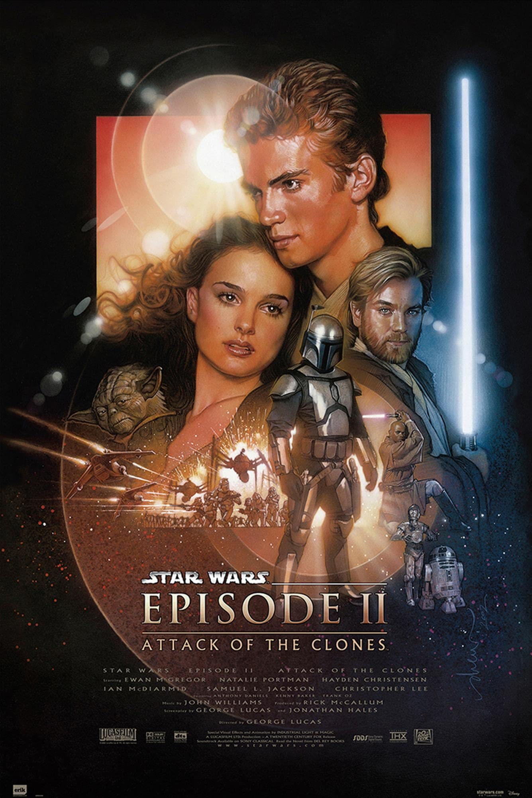
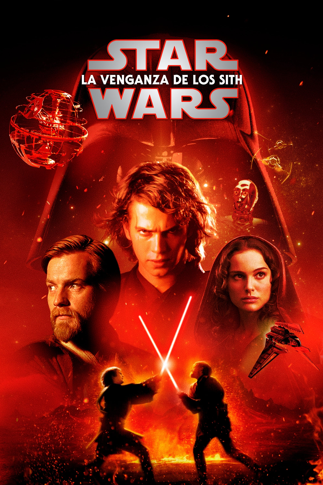
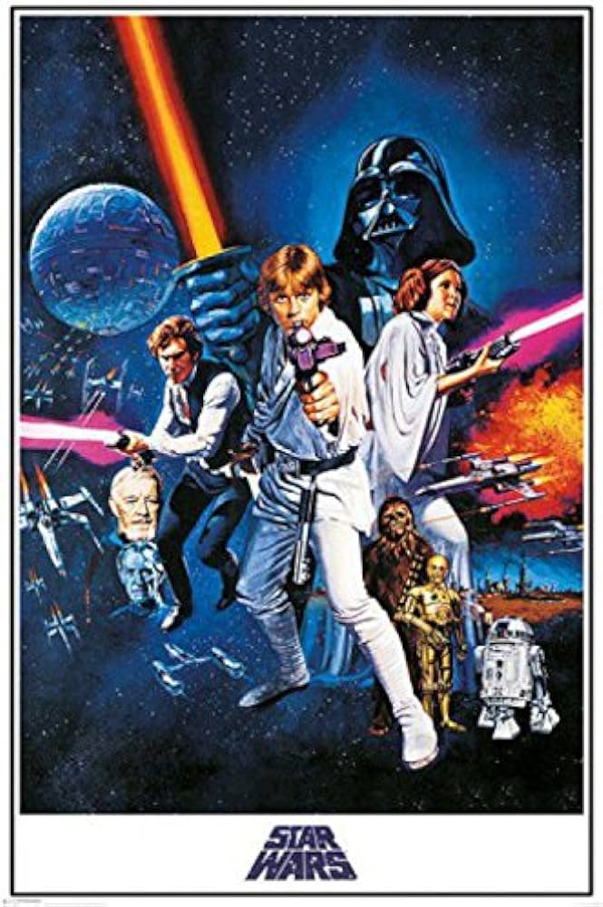
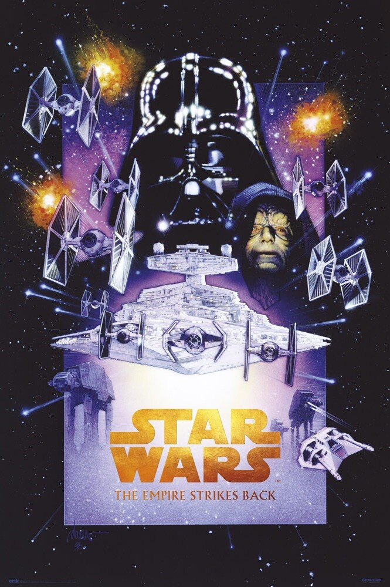
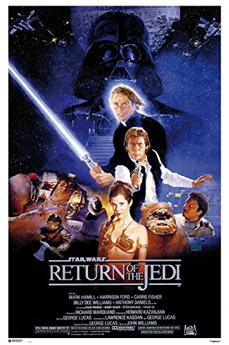
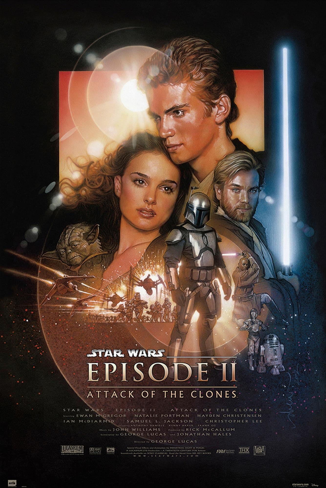
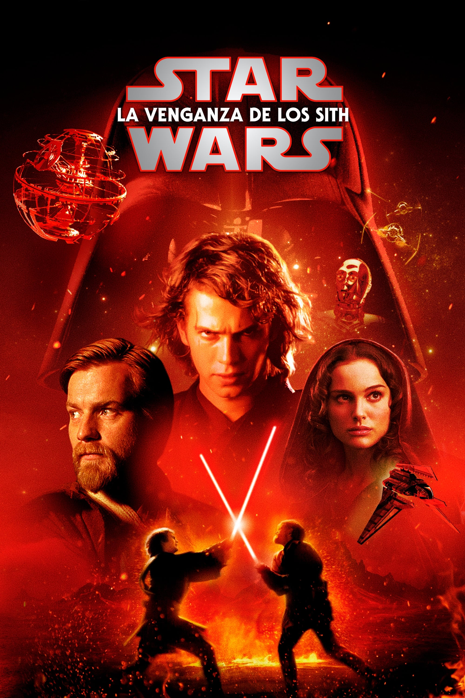
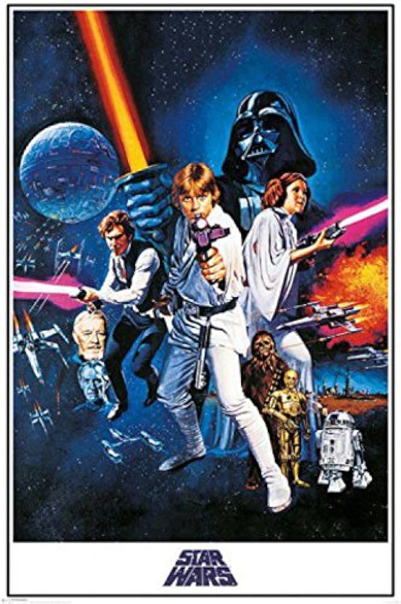
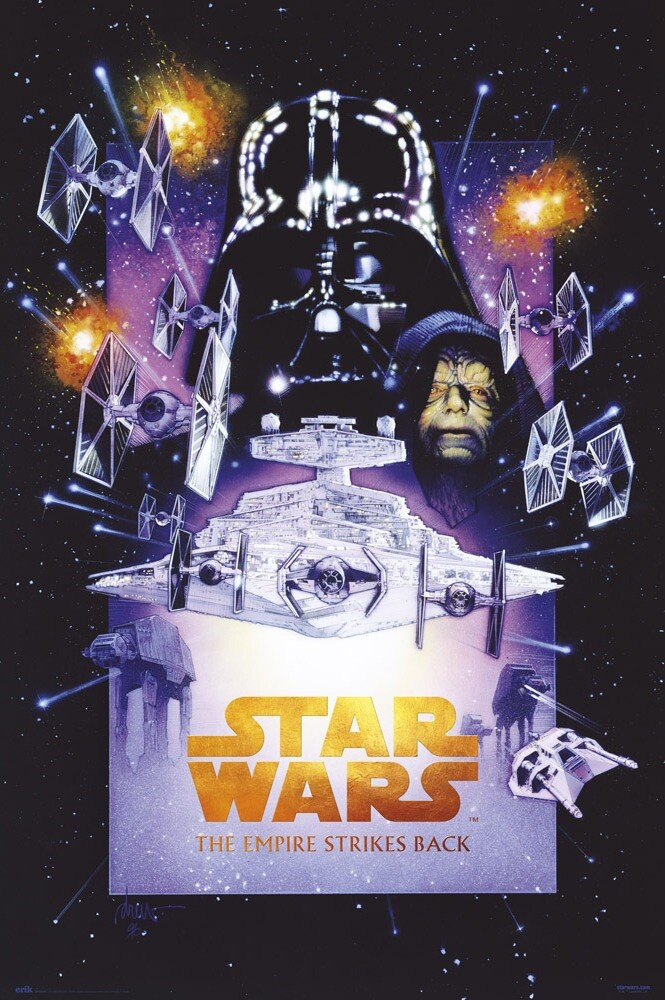
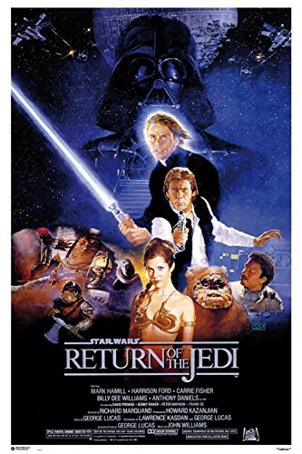

Descubre el emocionante universo de Star Wars a través de sus películas. Desde el icónico "Una nueva esperanza" hasta las más recientes producciones de Disney. Sumérgete en la galaxia lejana con personajes inolvidables y épicas batallas entre el bien y el mal.
| Película | Año de Emisión | ¿Participación de Disney? |
|---|---|---|
| Star Wars: Episode IV - Una nueva esperanza | 1977 | No |
| Star Wars: Episode V - El imperio contraataca | 1980 | |
| Star Wars: Episode VI - El retorno de los Jedi | 1983 | |
| Star Wars: Episode I - La amenaza fantasma | 1999 | |
| Star Wars: Episode II - El ataque de los clones | 2002 | |
| Star Wars: Episode III - La venganza de los Sith | 2005 | |
| Star Wars: Episode VII - El despertar de la fuerza | 2015 | Sí |
| Star Wars: Episode VIII - Los últimos Jedi | 2017 | |
| Star Wars: Episode IX - El ascenso del Skywalker | 2019 | |
| Star Wars: Han Solo | 2018 | |
| Star Wars: Rogue One | 2016 |
 









Curiosidades
- El sable de luz de Luke Skywalker originalmente iba a ser azul, pero se cambió a verde para que se destacara mejor en el fondo de Tatooine.
- La respiración de Darth Vader es una combinación de sonidos de una máquina de respiración y James Earl Jones respirando.
- George Lucas creó a Jar Jar Binks pensando en que a los niños les gustaría, pero recibió críticas mixtas por parte de los fanáticos.